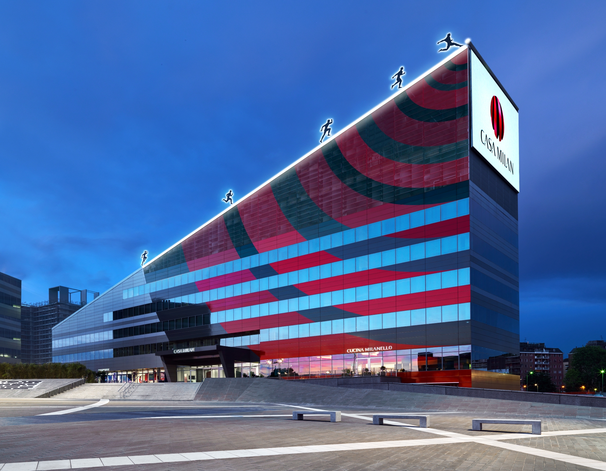

Casa Milan
Dove Trovarci
Un po di Storia
Fortemente voluta dall'ex amministratore delegato del Milan Barbara Berlusconi, nella zona riqualificata del Portello, è stata progettata dall'architetto leccese Fabio Novembre. La piazza antistante, piazza Gino Valle, si estende per 25.000 m², risultando nel 2014 la più grande di Milano, e ospita anche una scultura di Emilio Isgrò, Grande cancellatura per Giovanni Testori (di 23,40 m X 2,47 m). L'allestimento di Casa Milan è costato dieci milioni di euro e l'affitto costa alla società due milioni all'anno. L'allestimento degli interni è stato fatto dalla società romana Bondino Engineering. Dal 6 ottobre 2013 è la sede del Milan e ha sostituito la sede storica in via Turati. Il 2 aprile 2014 è stata inaugurata ufficialmente mentre il 10 luglio successivo vi si è svolta per la prima volta la presentazione della prima squadra per la stagione 2014-2015; il giorno dopo lo sponsor societario Audi vi ha presentato ufficialmente in Italia la terza serie dell'Audi TT. L'edificio è di proprietà della Vittoria Assicurazioni ed è raggiungibile tramite la metropolitana di Milano tramite le stazioni Portello e Lotto.